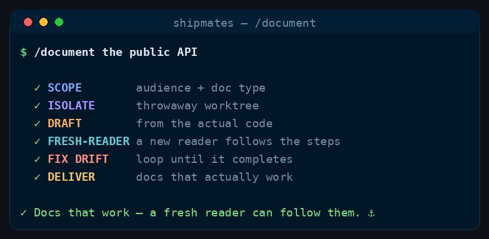

Command
/document
draft from the code → fresh-reader test → fix drift
Write or refresh documentation that actually works — the technical-writer drafts it from the real code, then a fresh reader agent follows the steps against the repo and must reach the stated result. Loops until the docs are drift-free and completable.
Produce docs that get a reader to done, gated on the one check that catches bad docs: a fresh agent with no prior context follows the instructions against the real repo and must reach the stated result. Docs that drift from the code or can't be completed are rejected and fixed. The gate is "a newcomer can actually follow this," not "it reads well."
Input ($ARGUMENTS): what to document — a module, a feature, a public API/CLI, the README/getting-started, a migration guide, or the whole repo. If empty, ask what to document and for whom.
See it run

/document runs, in order.How to run it
Run it in your harness
/document <what to document — a module, a feature, a public API, the README, the whole repo><angle brackets> = required · [square brackets] = optional
Step by step
The stages
Six stages, in order. One is a hard gate — the run stops there until it passes.
-
Stage 0 — Scope: audience + doc type
Decide who reads this and what they're trying to do, then the right Diátaxis type — tutorial (first success), how-to (accomplish one task), reference (accurate/exhaustive), or explanation (the why). Don't blend them. State the concrete "reader can now do X" success condition the fresh-reader test will check.
-
Stage 0.5 — Isolate
Crew: (
MODE=pronly — orchestrator, deterministic, no agent)The worktree exists before anything writes. First check
git -C <repo> status --porcelain; if the caller's tree is dirty, stop and say so — a worktree cut fromHEADholds committed work only, so a draft written against it would silently miss whatever the caller hasn't committed yet; tell them to commit or stash first. Otherwise, exactly as/ship-issue's isolate stage, but cut from currentHEADrather thanorigin/<BASE_BRANCH>, so it contains the work being documented:git -C <repo> worktree add <WORKTREE_DIR> -b <BRANCH> HEADDrafting, the fresh-reader run and every fix round happen inside
<WORKTREE_DIR>. UnderMODE=edit-in-place, skip this stage and work in the repo as it stands. -
Stage 1 — Draft from the actual code
Crew:
technical-writerSpawn the
technical-writerto write/refresh the doc from the real source — read the actual signatures, flags, paths, config, and outputs first; every command, parameter, and result must match what the repo does today. Minimal (least that gets to done), scannable, consistent terminology, runnable examples, prerequisites stated up front. Writes in the repo's format. -
Stage 2 — Fresh-reader test
Gate: HARD GATE
Crew: (agent: fresh
READER)Spawn a fresh agent that gets ONLY the doc and the repo (not the writer's context). It plays the newcomer: follows the steps literally, runs the commands/examples as written, and reports where it got stuck, what didn't match reality, what was assumed-but-unstated, and whether it reached the Stage 0 success condition. This is the real gate — a doc the reader can't complete has failed, however polished.
-
Stage 3 — Fix drift & loop
Feed the reader's failures back to the
technical-writer; fix the drift, the broken example, the missing prerequisite, the undefined jargon. Re-run the fresh-reader test (Stage 2) on the revised doc. Loop up toMAX_ROUNDS. If it still can't be completed after that, STOP and hand the user the doc plus the reader's outstanding blockers — don't ship docs that don't work. -
Stage 4 — Deliver
pr(the default): commit on the worktree branch — staging only the paths this run produced, nevergit add -A— push, and open the PR againstBASE_BRANCH. Then gate on CI: pollgh pr checksuntil nothing is pending; a red check means pulling the failing log, fixing it, re-pushing, and re-polling — bounded byMAX_FIX_ROUNDS, after which you stop and escalate to the user with the failing log rather than looping. Never advance a red PR. Stop there unlessMERGE_MODE=auto, in which case merge the PR and remove<WORKTREE_DIR>; the manual default leaves the worktree in place with the PR open.edit-in-place: leave the finished docs in the working tree and report. Report: what was documented, the doc type, the fresh-reader's final result (in its words), rounds taken, and any follow-ups (things worth documenting next, discovered gaps).
Config
WRITER=technical-writer.READER= a freshgeneral-purpose(ortechnical-writer) agent that has NOT seen the drafting — it only gets the doc + the repo, like a real newcomer.MAX_ROUNDS=3— the fresh-reader fix loop cap (Stage 3).MODE=pr(default) — a worktree, a branch and a CI-gated PR, reusing/ship-issue's isolate stage and its commit-push-PR stage; your checkout is left exactly as you left it.edit-in-placewrites the docs straight into the working tree — still available, but ask for it.- Under
MODE=pr:BASE_BRANCH= the repo's default branch — the PR's target, not what the worktree is cut from (that's currentHEAD, so the draft has your latest work in it).WORKTREE_DIR=../<repo>--docs-<slug>.BRANCH=docs/<slug>.MERGE_MODE=manual(stop at a reviewed PR;autoopt-in).MAX_FIX_ROUNDS=2— a separate cap, on CI-fix rounds at Stage 4, so a permanently-red check escalates to the user instead of looping. The orchestrator owns all git/gh; agents never push. If there is no remote forghto open a PR against, stop at the branch and say so — never silently downgrade to writing in the tree. - Audience, voice & format = the repo's own (README tone, docs framework, terminology). Match it; don't invent a competing style.
Guardrails
- The fresh-reader test is the gate — accuracy is proven by someone completing the task, not by the writer asserting it's right. The reader must be a genuinely fresh agent, not the writer re-reading.
- Zero drift: every command/flag/path/output matches the current code — verified against source, not memory.
- Right doc for the reader's job (Diátaxis) — don't turn a how-to into a history lesson.
- Minimal and honest: cut filler; call out breaking changes and their upgrade path in changelogs/migration guides.
- Bounded loop; escalate with the reader's blockers rather than shipping docs that don't work.
- Docs are source, so they get a branch. A doc rewrite lands as a diff a human can read, not as a surprise in someone's checkout.
MODE=edit-in-placeis an explicit request, never an assumption. - Be resumable. A re-run may find the worktree, branch, or PR already exists — reuse them rather than erroring or duplicating work.
- If a role doesn't resolve to a
.claude/agents/*.md, fall back togeneral-purposewith the brief inlined and note it.
Where this lives
This page is generated from commands/document.md. The installer copies it to ~/.claude/skills/document/SKILL.md for every project, or .claude/skills/document/SKILL.md inside a single repo.